Predator and STR Community species composition workflow iii) prediction of evolution environment from measurement environment
1 Setup
Loads required libraries and sets global variables
2 Read
Read and format 16S amplicon data
Show/hide code
sptable <- readr::read_tsv(here::here(data_stp_sp, "species_counts_md.tsv")) %>%
dplyr::mutate(transfer = day/7)
counts_f <- sptable %>%
dplyr::group_by(sample) %>%
dplyr::mutate(f=count_correct/sum(count_correct)) %>%
dplyr::ungroup() %>%
dplyr::mutate(measure_env_short = dplyr::case_when(measure_env == "bact" ~ "Meas: B",
measure_env == "bact_pred" ~ "Meas: BP",
measure_env == "bact_strep" ~ "Meas: BS",
measure_env == "bact_pred_strep" ~ "Meas: BPS")) %>%
dplyr::mutate(home_env_short = dplyr::case_when(evolution_env == "anc" ~ "Home: Anc",
evolution_env == "bact" ~ "Home: B",
evolution_env == "bact_pred" ~ "Home: BP",
evolution_env == "bact_strep" ~ "Home: BS",
evolution_env == "bact_pred_strep" ~ "Home: BPS")) %>%
dplyr::mutate(measure_env_short = factor(measure_env_short, levels = c("Meas: B", "Meas: BP", "Meas: BS", "Meas: BPS")),
home_env_short = factor(home_env_short, levels = c("Home: Anc", "Home: B", "Home: BP", "Home: BS", "Home: BPS")),
day = factor(day),
replicate = factor(replicate),
strainID = factor(strainID, levels = names(hambi_colors)))Read population density data
3 Data formatting
Separate the samples to only include those from the experiment. These are the samples that will be used in the machine learning pipeline
Show/hide code
# these are communities of a (supposedly) known composition. Can be used with metacal
pos_ctrl_samples <- counts_f %>%
dplyr::filter(str_detect(sample, "pos_ctrl"))
# these are samples taken directly from YSK and represent the composition of the communities used to start the experiment
t0_samples <- counts_f %>%
dplyr::filter(!str_detect(sample, "pos_ctrl")) %>%
dplyr::filter(day == 0)
# only samples from the experiment
counts_f_experiment <- anti_join(counts_f, pos_ctrl_samples,
by = join_by(sample, strainID, genus, species, count, count_correct, replicate,
day, measure_env, evolution_env, transfer, f,
measure_env_short, home_env_short)) %>%
dplyr::anti_join(., t0_samples,
by = join_by(sample, strainID, genus, species, count, count_correct, replicate,
day, measure_env, evolution_env, transfer, f,
measure_env_short, home_env_short)) %>%
dplyr::mutate(measure_env_short = factor(measure_env_short, levels = c("Meas: B", "Meas: BP", "Meas: BS", "Meas: BPS")),
home_env_short = factor(home_env_short, levels = c("Home: Anc", "Home: B", "Home: BP", "Home: BS", "Home: BPS")),
day = factor(day),
replicate = factor(replicate),
strainID = factor(strainID, levels = names(hambi_colors)))4 Data normalization
Here we’ll use the same filtering criteria as in the t-SNE analysis from section 3 of the last analysis.
Show/hide code
Briefly, we will use the centered log-ratio transformation for the species abundances. The centered log-ratio can be interpreted as the log-fold change of species i relative to the average microbe in a sample. The formula for the transformation is:
\[ \text{clr}(\mathbf x)= \left(log \frac{x_i}{g(\mathbf x)} \right)_{i=1,...,D} \qquad \text{with} \quad g(\mathbf x) = \left(\prod_{i=1}^Dx_i\right)^{1/D} = \exp\left(\frac{1}{D}\sum_{i=1}^D \log x_i\right)\text{,} \]
We will use the implementation of centered log-ratio transform in the compositions package
Show/hide code
set.seed(12353)
lowstrainsv <- c(
"HAMBI_0097",
"HAMBI_2792"
)
mymat <- counts_f_experiment %>%
dplyr::filter(!(strainID %in% lowstrainsv)) %>%
dplyr::select(sample, strainID, count) %>%
dplyr::mutate(count = count + 1) %>%
# important to arrange by sample as this makes some later joins easier
dplyr::arrange(sample) %>%
tidyr::pivot_wider(names_from = "strainID", values_from = "count") %>%
tibble::column_to_rownames(var = "sample") %>%
data.frame()
# calculate clr transform
balclr <- compositions::clr(mymat)5 Machine learning the home environment
The goal is to see if we can reliably predict which home environment a community came from (either ancestral clonal, or co-evolved in YSK) using only the species abundances, knowledge of the experiment structure (e.g., replicate and experimental transfer), and the measurement environment. The motivation behind this is that if we can learn the evolutionary home environment there must be some kind of “ecological signal” embedded in the community data that is a function of the evolutionary home environment. We are using machine learning approaches because they are flexible, powerful, and we are most interested in prediction. We care less about which features/variables are driving the signal…
Load the tidymodels ecosystem. We are using tidymodels because it allows us to work with familiar tidyverse syntax while making sure we adhere to best practices in training and assessing the performance of machine learning models.
First doing some basic data preparations. We will create some additional classification structures that we will investigate further below
Show/hide code
balclr_md <- data.frame(balclr) %>%
tibble::rownames_to_column(var = "sample") %>%
dplyr::left_join(distinct(dplyr::select(counts_f_experiment, sample, replicate,
transfer, measure_env, evolution_env)), by = join_by(sample)) %>%
dplyr::left_join(celldens, by = join_by(replicate, transfer, measure_env, evolution_env)) %>%
#dplyr::filter(measure_env != evolution_env) %>%
dplyr::mutate(replicate = factor(replicate),
transfer = factor(transfer),
measure_env = factor(measure_env),
#home_env_5c = factor(if_else(evolution_env == "anc", NA_character_, evolution_env)),
home_env_5c = factor(evolution_env),
home_env_ae = factor(if_else(evolution_env == "anc", "anc", "evo")),
home_env_sns = factor(case_when(evolution_env == "bact_strep" | evolution_env == "bact_pred_strep" ~ "strep",
evolution_env == "anc" ~ NA_character_,
TRUE ~ "nostrep")),
home_env_pnp = factor(case_when(evolution_env == "bact_pred" | evolution_env == "bact_pred_strep" ~ "pred",
evolution_env == "anc" ~ NA_character_,
TRUE ~ "nopred"))) %>%
dplyr::select(-sample, -evolution_env)5.1 5 classes (ancesteral, B, BP, BS, and BPS)
First were going to try and predict all 5 different home evolution environments
5.1.1 Spliting
Split the data using the default 3:1 ratio of training-to-test. Here we also set the strata argument. This argument makes sure that both sides of the split have roughly the same distribution for each value of strata. If a numeric variable is passed to strata then it is binned and distributions are matched within bins. In this case there will be roughly the same distribution of the 5 classes within each side of the test/train split.
Show/hide code
anc bact bact_pred bact_pred_strep bact_strep
72 70 71 70 72 The data is balanced
Resample the training set using five repeats of 10-fold cross-validation
5.1.2 Recipe
First we need to preprocess the data so that it is in optimal format for Ml. Some useful steps include:
step_novel():converts all nominal variables to factors and takes care of other issues related to categorical variables.step_normalize():normalizes (center and scales) the numeric variables to have a standard deviation of one and a mean of zero. (i.e., z-standardization).step_dummy():converts our factor column ocean_proximity into numeric binary (0 and 1) variables.- Note that this step may cause problems if your categorical variable has too many levels - especially if some of the levels are very infrequent. In this case you should either drop the variable or pool infrequently occurring values into an “other” category with step_other. This steps has to be performed before step_dummy.
step_zv():removes any numeric variables that have zero variance.step_corr():will remove predictor variables that have large correlations with other predictor variables.
Edit: data is already in centered log-ratio transform and further normalization doesn’t really help.
Show/hide code
balclr_5c_rec <- recipes::recipe(home_env_5c ~ ., data = balclr_5c_train) %>%
#step_novel(all_nominal(), -all_outcomes()) %>%
recipes::step_normalize(od600, ciliate_per_ml) %>%
recipes::step_dummy(all_nominal(), -all_outcomes()) %>%
recipes::step_zv(od600, ciliate_per_ml)# %>%
#step_corr(all_predictors(), threshold = 0.7, method = "spearman")You can take a peek at the what the preprocessing recipe does using prep and bake
5.1.3 Model specifications
The process of specifying models is:
- Pick a model type
- Set the engine
- Set the mode: regression or classification
Show/hide code
library(rules)
library(baguette)
svm_r_spec <-
parsnip::svm_rbf(cost = tune(), rbf_sigma = tune()) %>%
parsnip::set_engine("kernlab") %>%
parsnip::set_mode("classification")
svm_p_spec <-
parsnip::svm_poly(cost = tune(), degree = tune()) %>%
parsnip::set_engine("kernlab") %>%
parsnip::set_mode("classification")
cart_spec <-
parsnip::decision_tree(cost_complexity = tune(), min_n = tune()) %>%
parsnip::set_engine("rpart") %>%
parsnip::set_mode("classification")
bag_cart_spec <-
parsnip::bag_tree() %>%
parsnip::set_engine("rpart", times = 50L) %>%
parsnip::set_mode("classification")
rf_spec <-
parsnip::rand_forest(mtry = tune(), min_n = tune(), trees = 1000) %>%
parsnip::set_engine("ranger", importance = "impurity") %>%
parsnip::set_mode("classification")
xgb_spec <-
parsnip::boost_tree(tree_depth = tune(), learn_rate = tune(), loss_reduction = tune(),
min_n = tune(), sample_size = tune(), trees = tune()) %>%
parsnip::set_engine("xgboost") %>%
parsnip::set_mode("classification")
nnet_spec <-
parsnip::mlp(hidden_units = tune(), penalty = tune(), epochs = tune()) %>%
parsnip::set_engine("nnet", MaxNWts = 2600) %>%
parsnip::set_mode("classification")
fda_spec <-
parsnip::discrim_flexible(prod_degree = tune()) %>% #<- use GCV to choose terms
parsnip::set_engine("earth") %>%
parsnip::set_mode("classification")
bart_spec <-
parsnip::bart(trees = 1000, prior_terminal_node_coef = tune(), prior_terminal_node_expo = tune()) %>%
parsnip::set_engine("dbarts") %>%
parsnip::set_mode("classification")5.1.4 Create workflow set
Now we need to specify the workflows that will be followed for the different model types
Show/hide code
balclr_5c_wf <-
workflowsets::workflow_set(
preproc = list(balclr_5c = balclr_5c_rec),
models = list(
#SVM_radial = svm_r_spec,
#SVM_poly = svm_p_spec,
#CART = cart_spec,
#CART_bagged = bag_cart_spec,
#NNET = nnet_spec,
boosting = xgb_spec,
#bart = bart_spec,
#fda = fda_spec,
RF = rf_spec)
)
balclr_5c_wf5.1.5 Tune
Train and test performance for all the different models over the different train/test and 5-fold cv splits. This takes a long time to run…
Show/hide code
balclr_5c_grid_results <-
workflowsets::workflow_map(balclr_5c_wf,
seed = 1578,
resamples = balclr_5c_folds,
grid = 15,
control = tune::control_grid(save_pred = TRUE, parallel_over = "everything", save_workflow = TRUE),
metrics = yardstick::metric_set(recall, precision, f_meas, j_index, accuracy, kap, roc_auc, sens, spec),
)
# save this for later
readr::write_rds(balclr_5c_grid_results, here::here(data_ml, "model_tune_5_class.rds"))5.1.6 Best tuning parameters and best performing models
First look at which of the models performed best according to area under the receiver operator curve
Show/hide code
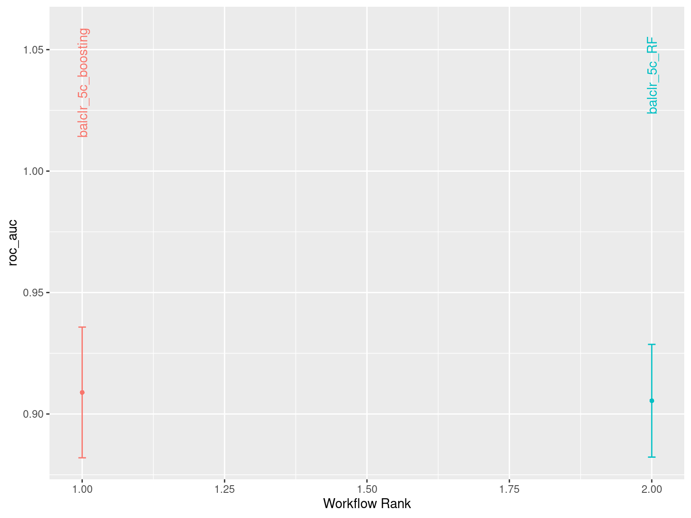
5.1.6.1 Peformance metrics for best model
Defines a function for easily extracting metrics of interest
Show/hide code
getmymetrics <- function(gridresults, myworkflow, mymetric, mysplit){
best_results <- gridresults %>%
workflowsets::extract_workflow_set_result(myworkflow) %>%
tune::select_best(metric = mymetric)
gridresults %>%
hardhat::extract_workflow(myworkflow) %>%
tune::finalize_workflow(best_results) %>%
tune::last_fit(split = mysplit,
metrics = yardstick::metric_set(recall, precision, f_meas, j_index, accuracy, kap, roc_auc, sens, spec))
}Call the function to get performance metrics of different models
Defines a function to collect and format metrics of different models and calls the function on all the different trained models
Show/hide code
collect_format <- function(res, name){
tune::collect_metrics(res) %>%
dplyr::select(metric = .metric,
{{ name }} := .estimate,
estimate_type = .estimator)
}
collect_format(balclr_5c_rf_test_results, "random_forest") %>%
dplyr::left_join(collect_format(balclr_5c_boosting_test_results, "boosting"), by = join_by(metric, estimate_type)) %>%
dplyr::relocate(estimate_type, metric)5.1.6.2 ROC and PR curves
This is a useful resource for understanding ROC curves and PR curves.
ROC curves here indicate that there is decent performance for the evolution environments of the ancestral clones, bacteria only, and bacteria plus ciliates. Performance is worse for treatments with streptomycin (see the PR curves). This is consistent with the strong overlap in community composition that we saw between strep and strep plus ciliate treatments. If the community response of the treatments is similiar it will be difficult to identify discriminating patterns in the data.
Show/hide code
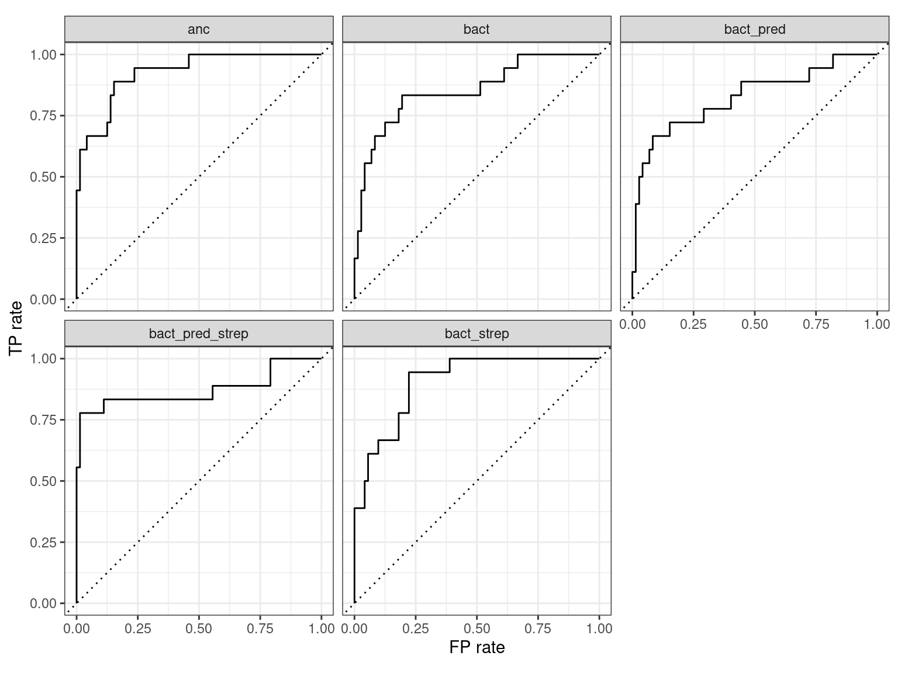
Show/hide code
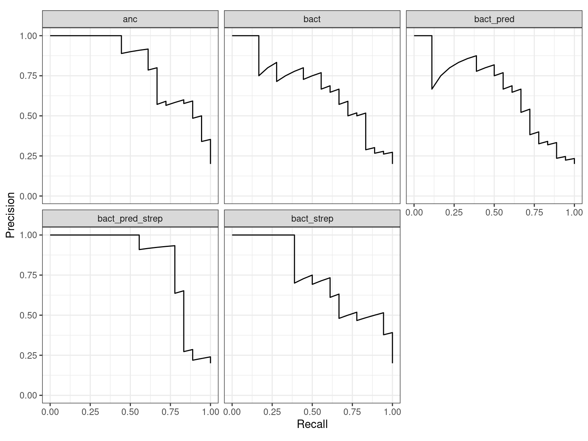
5.1.6.3 Confusion matrix
The confusion matrix shows that for ciliates evolution environment (bact_pred), the model is only getting the evolution environment correct about half the time (10 correct/8 incorrect) which is basically the same as guessing. The best performing home environments are the ancestral and the combined predators and streptomycin treatments.
Show/hide code
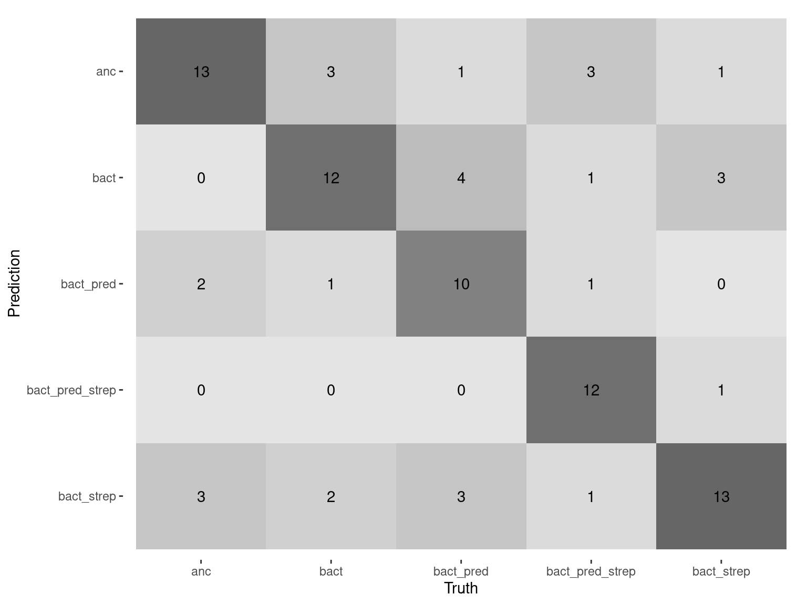
5.1.6.4 Probability distributions for the 5 classes
Gradient boosting trees give each prediction a probability for every class. The higher the probability the higher the confidence in the prediction. We can visualize the distribution of these prediction probabilities to get some insight as to which classes the model has trouble distinguishing and which are very clearly separated.
Show/hide code
balclr_5c_rf_test_results %>%
tune::collect_predictions() %>%
tidyr::pivot_longer(c(
.pred_anc,
.pred_bact,
.pred_bact_pred,
.pred_bact_pred_strep,
.pred_bact_strep
)) %>%
ggplot2::ggplot() +
ggplot2::geom_density(aes(x = value, fill = home_env_5c), alpha = 0.5) +
ggplot2::labs(x = "Prediction Probability", y = "Density") +
ggplot2::facet_wrap( ~ name)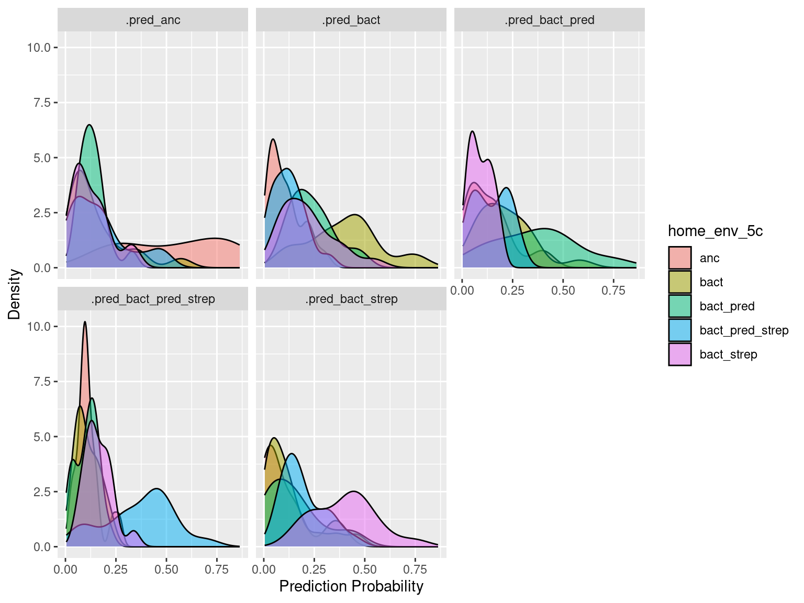
5.2 2 classes (ancestral clones vs coevolved history)
Based on the above analysis and from inspecting the community composition data it appears that ancestral/clonal community has a distinct response to the measurement conditions compared with all the other evolutionary histories. Here instead of trying to predict 5 different home environment classes we just want to predict whether the bacteria had a coevolutionary history from the YSK experiment or not. However, this introduces an additional challenge because now the classes we will be trying to predict are imbalanced.
5.2.1 Spliting
Done the same as in Section 5.1.1 from the 5-class classification.
Show/hide code
anc evo
72 283 So in this case the classes from the data are clearly not balanced… We will try and address that in the recipe step using the themis package. In particular we use Randomly Over Sampling Examples (ROSE). The ROSE algorithm works by selecting an observation belonging to class k and generates new examples in its neighborhood is determined by some matrix H_k. Smaller values of these arguments have the effect of shrinking the entries of the corresponding smoothing matrix H_k, Shrinking would be a cautious choice if there is a concern that excessively large neighborhoods could lead to blur the boundaries between the regions of the feature space associated with each class.
5.2.2 Recipe
Done the same as in Section 5.1.2 from the 5-class classification.
Show/hide code
balclr_ae_rec <- recipes::recipe(home_env_ae ~ ., data = balclr_ae_train) %>%
recipes::step_normalize(od600, ciliate_per_ml) %>%
recipes::step_dummy(all_nominal(), -all_outcomes()) %>%
recipes::step_zv(od600, ciliate_per_ml)
balclr_ae_rec_rose <- recipes::recipe(home_env_ae ~ ., data = balclr_ae_train) %>%
themis::step_rose(home_env_ae) %>%
recipes::step_normalize(od600, ciliate_per_ml) %>%
recipes::step_dummy(all_nominal(), -all_outcomes()) %>%
recipes::step_zv(od600, ciliate_per_ml)5.2.3 Model specifications
Using the same model specifications as in Section 5.1.3 from the 5-class classification.
5.2.4 Create workflow set
Same process as in Section 5.1.4 from the 5-class classification.
Show/hide code
balclr_ae_wf <-
workflowsets::workflow_set(
preproc = list(balclr_ae = balclr_ae_rec,
balclr_ae_rose = balclr_ae_rec_rose),
models = list(
#SVM_radial = svm_r_spec,
#SVM_poly = svm_p_spec,
#CART = cart_spec,
#CART_bagged = bag_cart_spec,
#NNET = nnet_spec,
boosting = xgb_spec,
#bart = bart_spec,
#fda = fda_spec,
RF = rf_spec
)
)5.2.5 Tune
Same as in Section 5.1.5 from the 5-class classification. Warning this takes some time…
Show/hide code
balclr_ae_grid_results <-
workflowsets::workflow_map(balclr_ae_wf,
seed = 1469,
resamples = balclr_ae_folds,
grid = 15,
control = tune::control_grid(save_pred = TRUE, parallel_over = "everything", save_workflow = TRUE),
metrics = yardstick::metric_set(recall, precision, f_meas, j_index, accuracy, kap, roc_auc, sens, spec),
)
# save this for later
readr::write_rds(balclr_ae_grid_results, here::here(data_stp_ml, "model_tune_ae.rds"))5.2.6 Best tuning parameters and best performing models
First look at which of the models performed best. We’ll use the J index and the ROC auc as suggested in the tidymodels unbalanced class tutorial.
- The area under the ROC curve is an overall assessment of performance across all cutoffs. Values near one indicate very good results while values near 0.5 would imply that the model is very poor (i.e. no better than guessing)
- The J index (a.k.a. Youden’s J statistic) is sensitivity + specificity - 1. Values near one are once again best.
If a model is poorly calibrated, the ROC curve value might not show diminished performance. However, the J index would be lower for models with pathological distributions for the class probabilities. The yardstick package will be used to compute these metrics.
J index
Show/hide code
# which metric to visualize
mymetric <- "j_index"
tune::autoplot(
balclr_ae_grid_results,
rank_metric = mymetric,
metric = mymetric,
# one point per workflow
select_best = TRUE) +
ggplot2::geom_text(aes(y = mean + 0.15, label = wflow_id), angle = 90, hjust = 1) +
ggplot2::theme(legend.position = "none")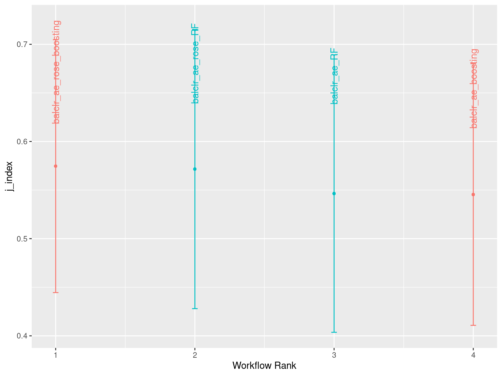
Show/hide code
# which metric to visualize
mymetric <- "roc_auc"
tune::autoplot(
balclr_ae_grid_results,
rank_metric = mymetric,
metric = mymetric,
# one point per workflow
select_best = TRUE) +
ggplot2::geom_text(aes(y = mean + 0.15, label = wflow_id), angle = 90, hjust = 1) +
ggplot2::theme(legend.position = "none")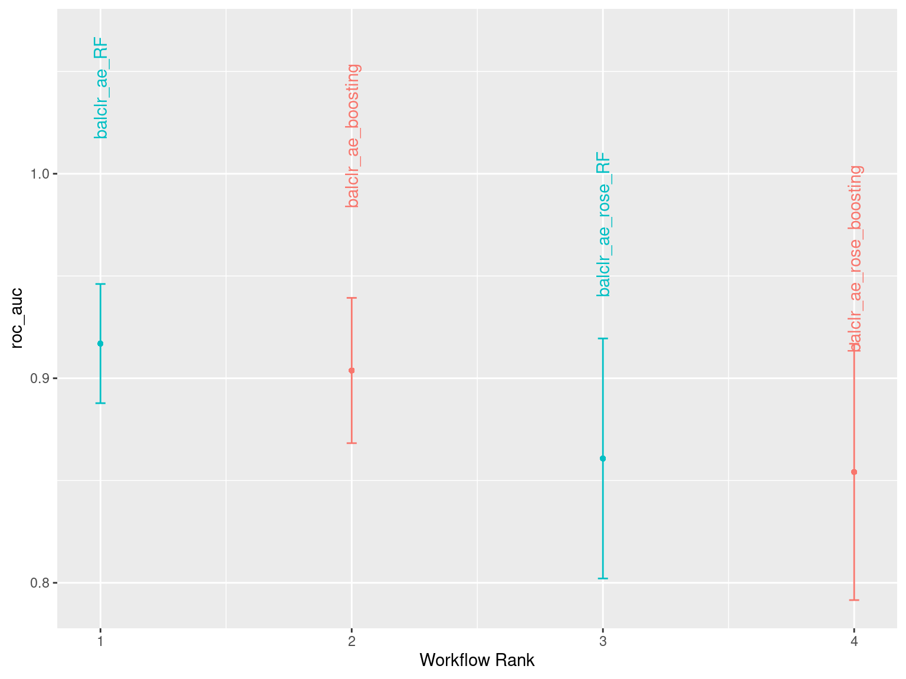
It looks like ROSE preprocessing step helped (at least somewhat) with the J-index. Class imbalance sampling methods tend to greatly improve metrics based on the hard class predictions (i.e., the categorical predictions) because the default cutoff tends to be a better balance of sensitivity and specificity.
5.2.6.1 Peformance metrics for best model
Show/hide code
set.seed(4671)
balclr_ae_boosting_test_results <- getmymetrics(balclr_ae_grid_results,
"balclr_ae_rose_boosting",
"j_index",
balclr_ae_split)
balclr_ae_rf_test_results <- getmymetrics(balclr_ae_grid_results,
"balclr_ae_rose_RF",
"j_index",
balclr_ae_split)
collect_format(balclr_ae_rf_test_results, "random_forest") %>%
dplyr::left_join(collect_format(balclr_ae_boosting_test_results, "boosting"), by = join_by(metric, estimate_type)) %>%
dplyr::relocate(estimate_type, metric)Gradient boosting and random forest seems to be doing performing about equally here
5.2.6.2 ROC and PR curves
With unbalaced classes like we have here, it is best to look at both the ROC curve and the PR (precision-recall) curve. See here
Show/hide code
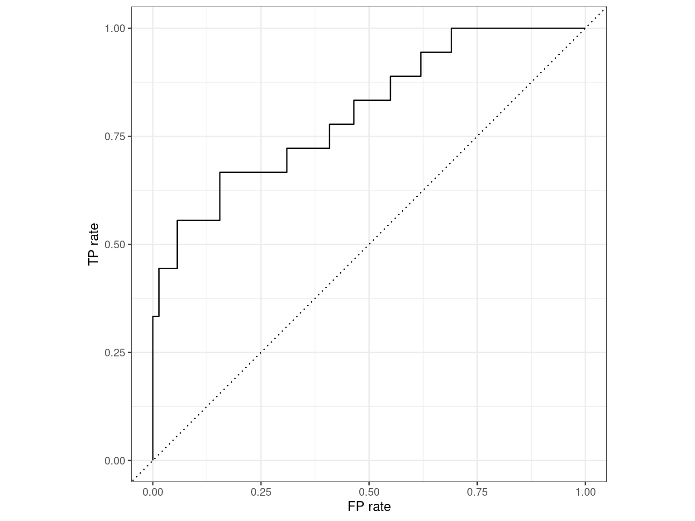
Show/hide code
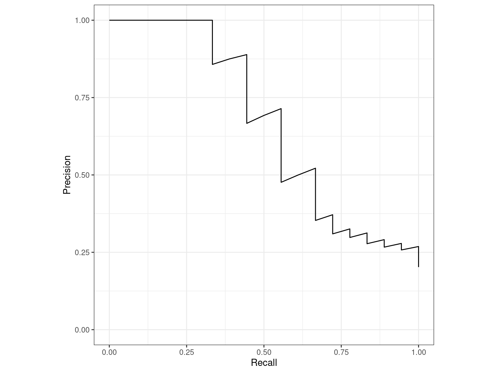
5.2.6.3 Confusion matrix
The model is doing pretty well finding the communiuties with a coevolutionary history, but it is doing less well at finding the ancestral communities. It is getting the ancestral correct 2/3 of the time.
Show/hide code
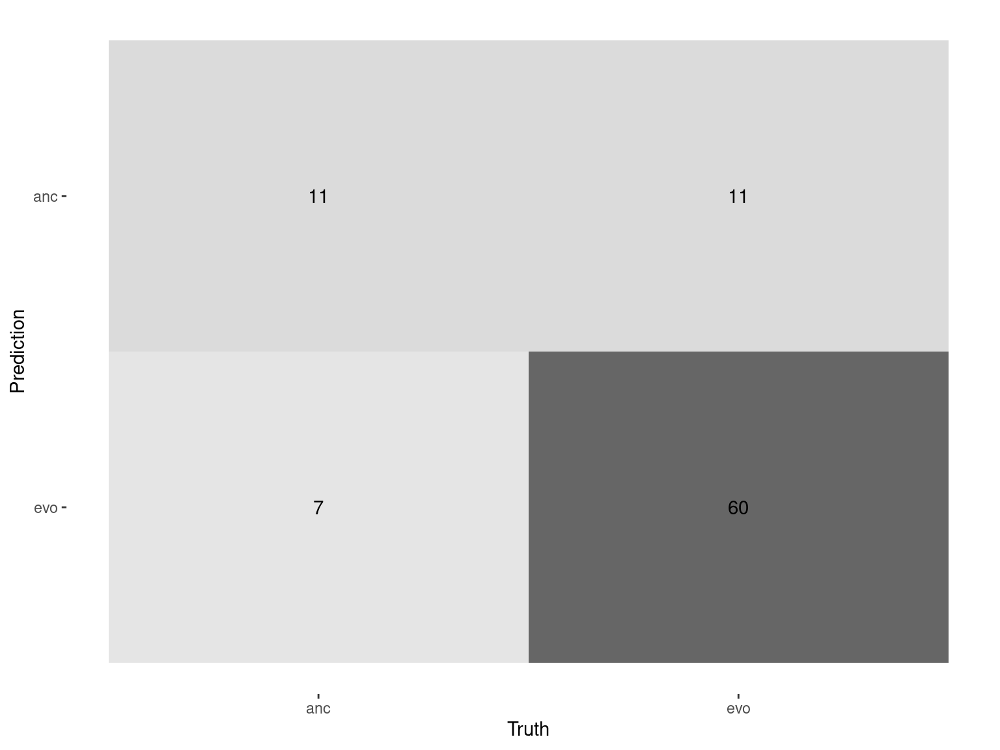
5.2.6.4 Probability distributions for the 2 classes
Show/hide code
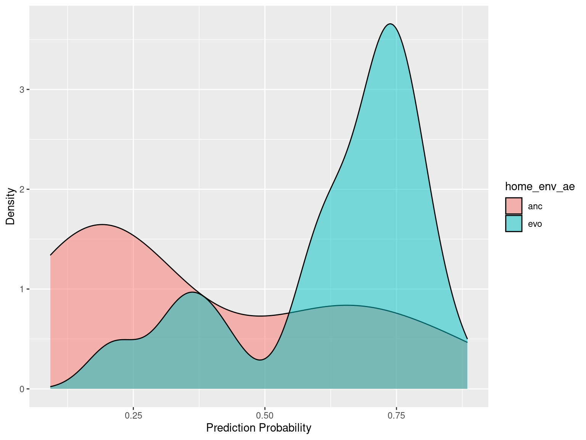
5.3 2 classes (streptomycin history vs no streptomycin history)
Now we will try and predict whether the evolutionary history of the communities included exposure to streptomycin
5.3.1 Spliting
Done the same as in Section 5.1.1 from the 5-class classification.
Show/hide code
balclr_sns <- balclr_md %>%
dplyr::select(-home_env_5c, -home_env_ae, -home_env_pnp) %>%
dplyr::mutate(replicate = factor(replicate),
transfer = factor(transfer),
measure_env = factor(measure_env),
home_env_sns = factor(home_env_sns)) %>%
# we omit the ancestral samples to keep it more balanced
tidyr::drop_na()
table(balclr_sns$home_env_sns)
nostrep strep
141 142 5.3.2 Recipe
Done the same as in Section 5.1.2 from the 5-class classification.
5.3.3 Model specifications
Using the same model specifications as in Section 5.1.3 from the 5-class classification.
5.3.4 Create workflow set
Same process as in Section 5.1.4 from the 5-class classification.
Show/hide code
library(discrim)
balclr_sns_wf <-
workflowsets::workflow_set(
preproc = list(balclr_sns = balclr_sns_rec),
models = list(
#SVM_radial = svm_r_spec,
#SVM_poly = svm_p_spec,
#CART = cart_spec,
#CART_bagged = bag_cart_spec,
#NNET = nnet_spec,
boosting = xgb_spec,
#bart = bart_spec,
#fda = fda_spec,
RF = rf_spec
)
)5.3.5 Tune
Same as in Section 5.1.5 from the 5-class classification. Warning this takes some time…
Show/hide code
balclr_sns_grid_results <-
workflowsets::workflow_map(balclr_sns_wf,
seed = 1569,
resamples = balclr_sns_folds,
grid = 15,
control = tune::control_grid(save_pred = TRUE, parallel_over = "everything", save_workflow = TRUE),
metrics = yardstick::metric_set(recall, precision, f_meas, j_index, accuracy, kap, roc_auc, sens, spec),
)
# save this for later
readr::write_rds(balclr_sns_grid_results, here::here(data_stp_ml, "model_tune_sns.rds"))5.3.6 Best tuning parameters and best performing models
First look at which of the models performed best. It appears that based on all metrics the random forest performs the best.
Show/hide code
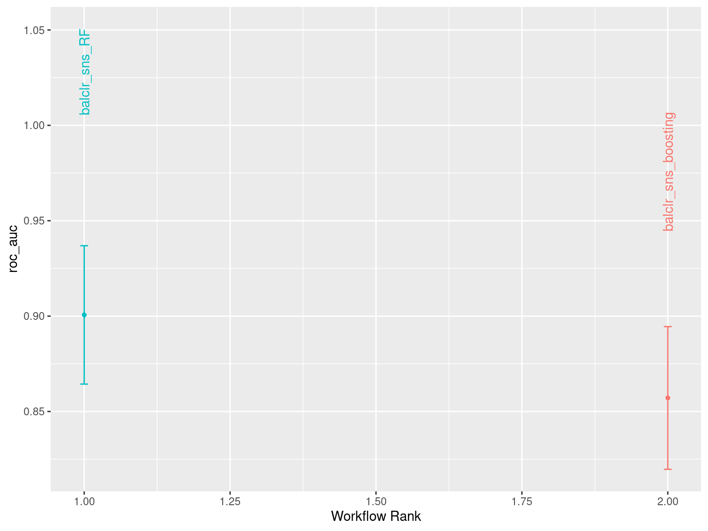
5.3.6.1 Peformance metrics for best model
All performance metrics are almost identical (making same overall predictions) with RF just having higher ROC auc
Show/hide code
set.seed(4671)
balclr_sns_rf_test_results <- getmymetrics(balclr_sns_grid_results,
"balclr_sns_RF",
"roc_auc",
balclr_sns_split)
balclr_sns_boosting_test_results <- getmymetrics(balclr_sns_grid_results,
"balclr_sns_boosting",
"roc_auc",
balclr_sns_split)
collect_format(balclr_sns_rf_test_results, "random_forest") %>%
dplyr::left_join(collect_format(balclr_sns_boosting_test_results, "boosting"), by = join_by(metric, estimate_type)) %>%
dplyr::relocate(estimate_type, metric)5.3.6.2 ROC and PR curves
ROC curves indicate that there is good performance for the evolution environments that either contain streptomycin or do not.
Show/hide code
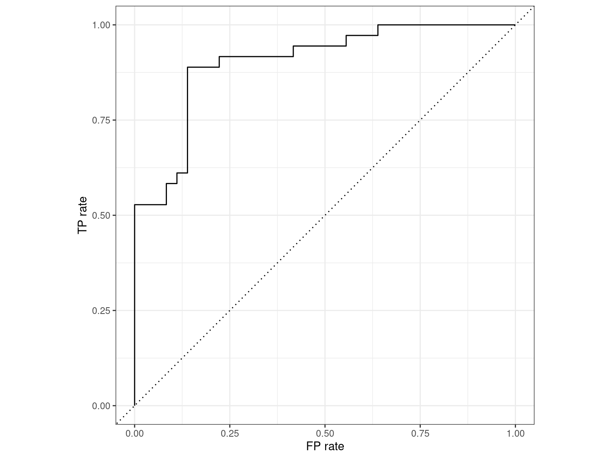
Show/hide code
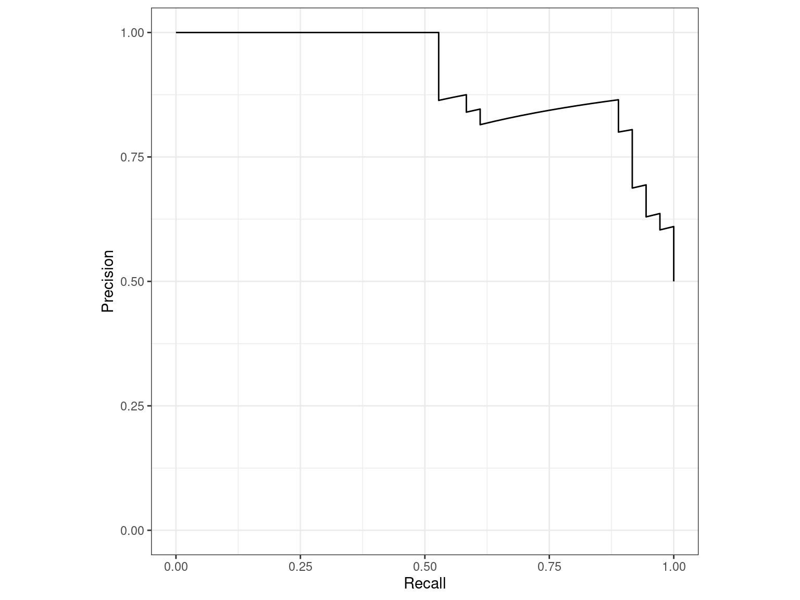
5.3.6.3 Confusion matrix
Show/hide code
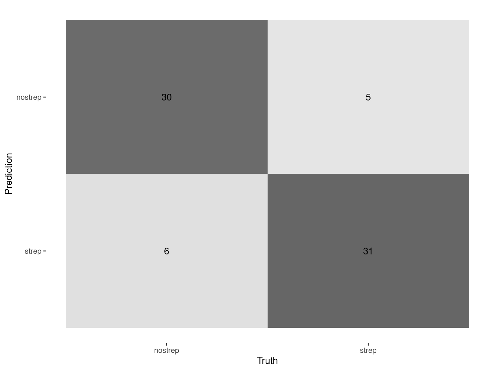
5.3.6.4 Probability distributions for the 2 classes
Show/hide code
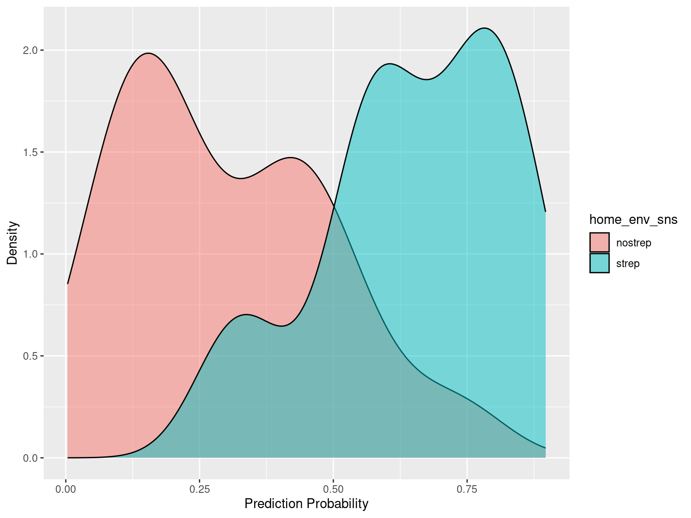
5.4 2 classes (predation history vs no predation history)
5.4.1 Spliting
Done the same as in Section 5.1.1 from the 5-class classification.
Show/hide code
balclr_pnp <- balclr_md %>%
dplyr::select(-home_env_5c, -home_env_ae, -home_env_sns) %>%
dplyr::mutate(replicate = factor(replicate),
transfer = factor(transfer),
measure_env = factor(measure_env),
home_env_pnp = factor(home_env_pnp)) %>%
# we omit the ancestral samples to keep it more balanced
tidyr::drop_na()
table(balclr_pnp$home_env_pnp)
nopred pred
142 141 5.4.2 Recipe
Done the same as in Section 5.1.2 from the 5-class classification.
5.4.3 Model specifications
Using the same model specifications as in Section 5.1.3 from the 5-class classification.
5.4.4 Create workflow set
Same process as in Section 5.1.4 from the 5-class classification.
Show/hide code
5.4.5 Tune
Same as in Section 5.1.5 from the 5-class classification. Warning this takes some time…
Show/hide code
balclr_pnp_grid_results <-
workflowsets::workflow_map(balclr_pnp_wf,
seed = 1569,
resamples = balclr_pnp_folds,
grid = 25,
control = tune::control_grid(save_pred = TRUE, parallel_over = "everything", save_workflow = TRUE),
metrics = yardstick::metric_set(recall, precision, f_meas, j_index, accuracy, kap, roc_auc, sens, spec),
)
# save this for later
readr::write_rds(balclr_pnp_grid_results, here::here(data_stp_ml, "model_tune_pnp.rds"))5.4.6 Best tuning parameters and best performing models
First look at which of the models performed best. It appears that based on all metrics the random forest performs the best.
Show/hide code
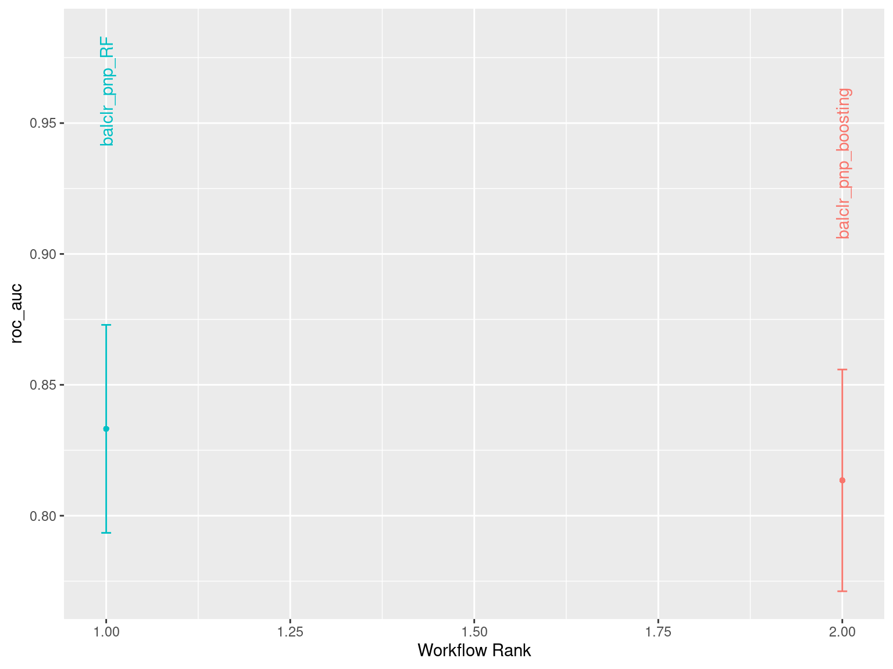
5.4.6.1 Peformance metrics for best model
Clearly here random forest is doing better
Show/hide code
set.seed(87605)
balclr_pnp_boosting_test_results <- getmymetrics(balclr_pnp_grid_results,
"balclr_pnp_boosting",
"j_index",
balclr_pnp_split)
balclr_pnp_rf_test_results <- getmymetrics(balclr_pnp_grid_results,
"balclr_pnp_RF",
"j_index",
balclr_pnp_split)
collect_format(balclr_pnp_rf_test_results, "random_forest") %>%
dplyr::left_join(collect_format(balclr_pnp_boosting_test_results, "boosting"), by = join_by(metric, estimate_type)) %>%
dplyr::relocate(estimate_type, metric)5.4.6.2 ROC and PR curves
ROC curves indicate that there is good performance for the evolution environments that either contain streptomycin or do not.
Show/hide code
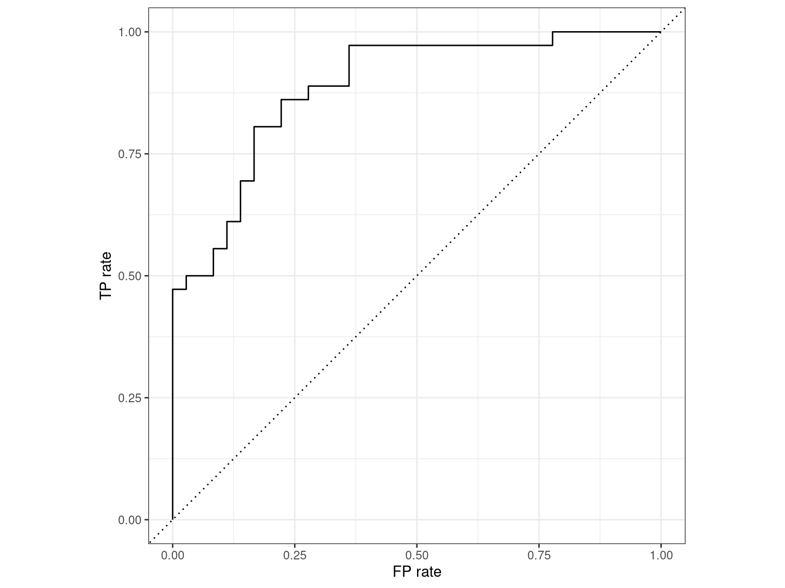
Show/hide code
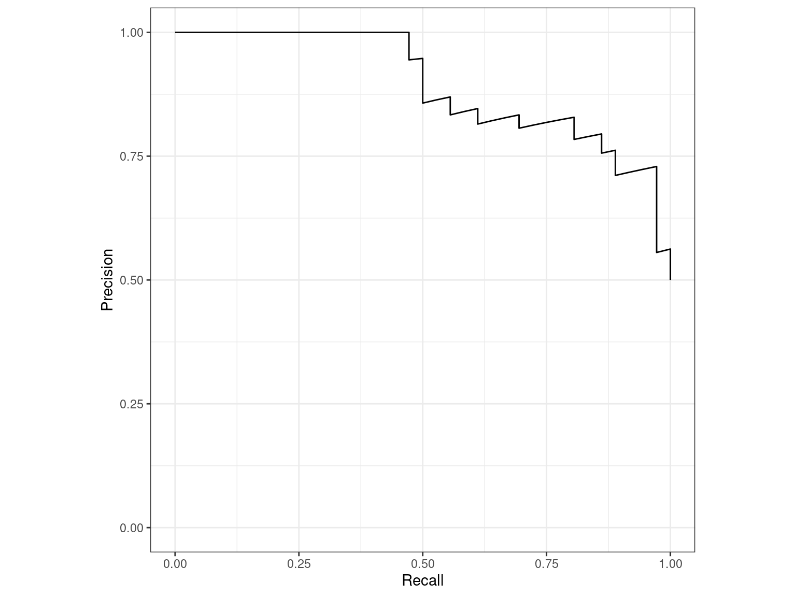
5.4.6.3 Confusion matrix
Show/hide code
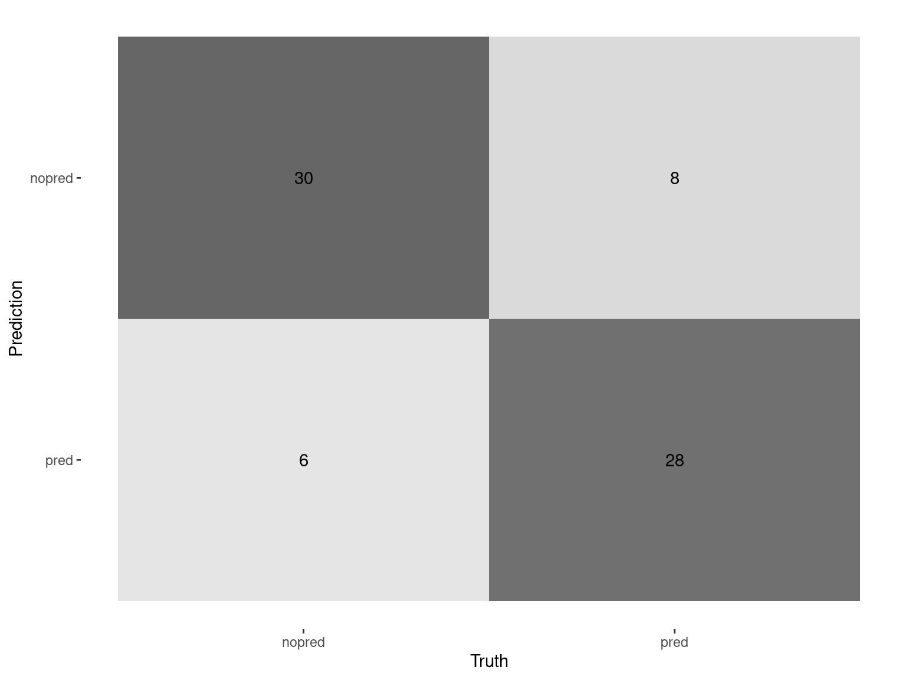
5.4.6.4 Probability distributions for the 2 classes
Show/hide code
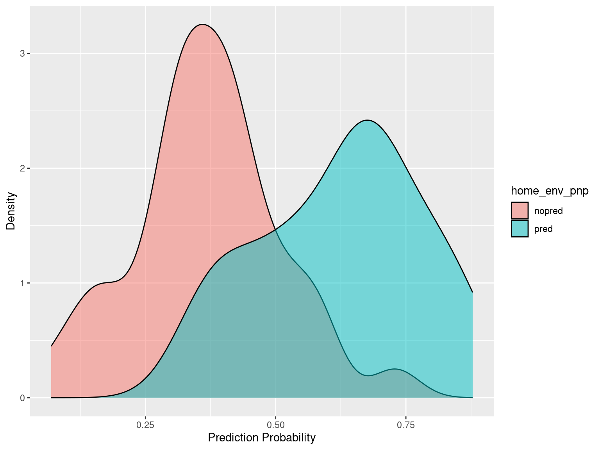